大语言模型生成文本的天然瓶颈是逐 token 顺序解码。DiffusionGemma（Google DeepMind 开源实验模型）用离散扩散绕开它：不是一次解码一个 token，而是并行迭代精炼 256-token 的块，消除了传统自回归（AR）LLM 的序列解码瓶颈。
它不从头训练——通过把混合专家（MoE）Gemma 4（3.8B 激活 / 25.2B 总参）微调而来，训练预算不到原 AR 模型总训练 token 的 10%。在完整评测套件平均下，它单次前向生成约 20 个 token，单张 NVIDIA H100 上可达约 1500 output tokens/s，比带最先进投机解码的 AR 模型还快一大截。
AR 模型一次解码一个 token，通信和内存带宽的利用被顺序依赖锁死。离散扩散的角度不同：先在噪声中初始化一个 256-token 的「画布（canvas）」，再由模型多轮并行去噪逐步把它们精炼成连贯文本。
去噪路径由一段概率路径定义：从干净的文本出发逐步加噪声（加噪路径），再训练模型沿反向把噪声样本一步步还原到干净分布（去噪路径）。采样轨迹是并行的——同一时刻多个 token 一起被精炼，吞吐因此不受单 token 顺序限制。
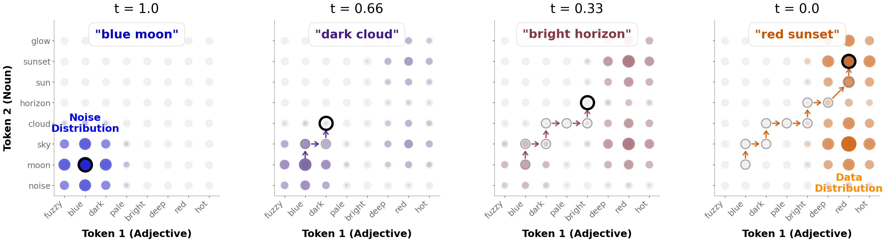
对长序列，DiffusionGemma 用块自回归（block-autoregressive）解码：一次生成一大段块，已有的块当作已确定文本，继续去噪下一个块，把块级并行和长文本一致性结合起来。
DiffusionGemma 是一个 encoder-decoder transformer。作者没有从零预训练一个扩散模型，而是直接用已公开的 Gemma 4 26B A4B MoE checkpoint 初始化——用一点生成质量换取训练成本的大幅下降，还能继承背骨模型的扩展上下文窗口与原生多模态理解。
去噪时，模型从噪声输入预测 256-token 块；推理阶段拆成三件套：块自回归解码处理长序列、去噪框架精炼单个块、以及区分思考（thinking）与否的采样。
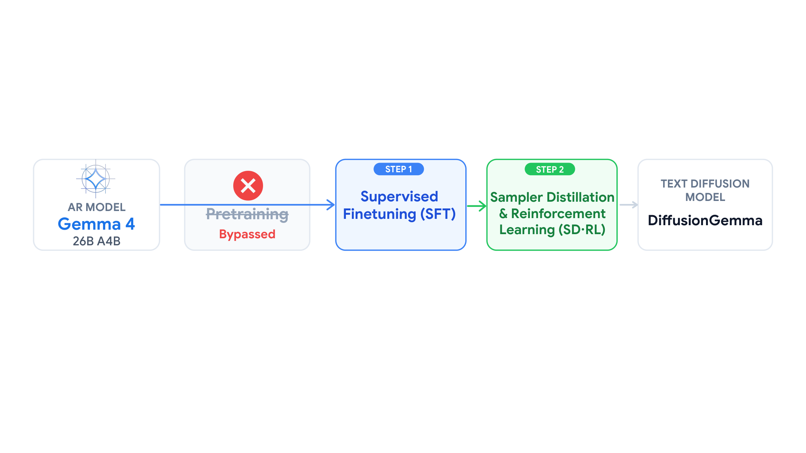
关键实验显示：微调后的权重仍保留自回归采样的能力（稍降性能），为未来的混合 diffusion-AR 解码铺路。
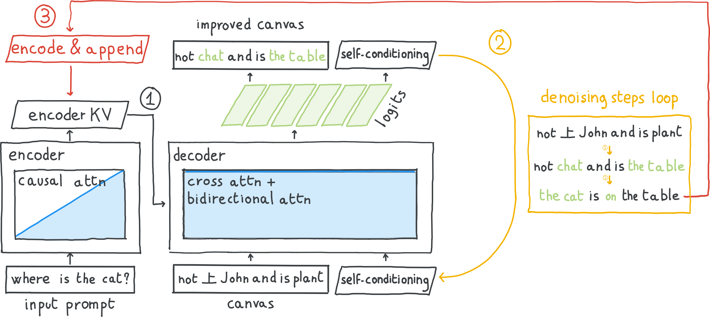
SFT 之前模型完全不会去噪文本。作者用扩展微调让 Gemma 4 26B A4B 适应「从噪声输入预测 256-token 块」这个任务。
技术关键是块对角注意力掩码：每个块内允许双向注意力，但禁止模型条件化其他去噪块。对给定 canvas，模型通过 encoder KV cache 条件化 prompt 与之前（未损坏）的 token。
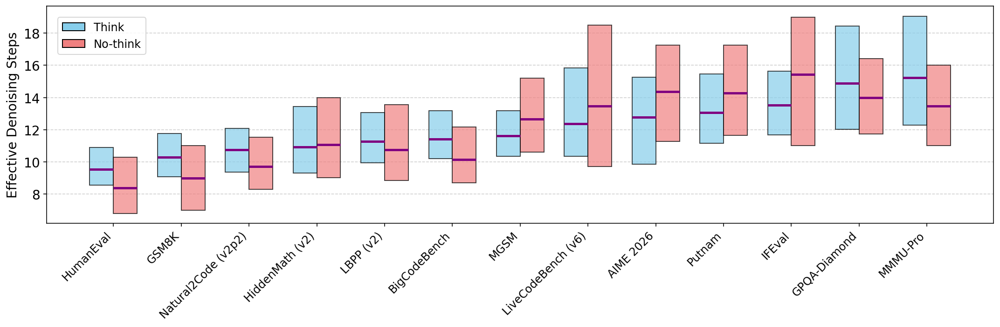
用离散扩散 / 去噪损失训练。实验显示适度 SFT 就能在非思维模式下表现良好，但要做思考（thinking）行为，需要相当长的 SFT——这是训练视角对模型的思维能力的刻画。
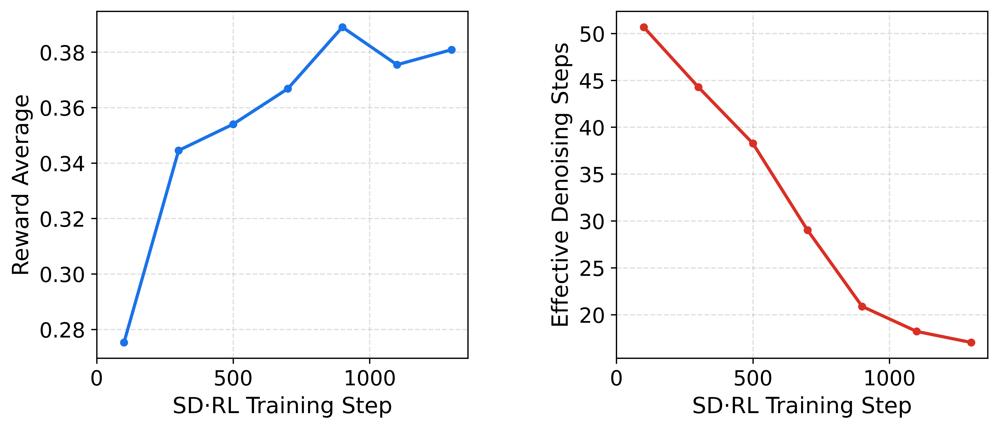
SFT 后高去噪步数下质量强，但高级推理/编码弱于 AR 基线，且在超低延迟所需的少步区间质量塌陷。传统做法是把「reward 对齐」和「采样器蒸馏」拆成两个独立阶段。
作者用一个统一阶段 SDRL（Sampler Distillation & RL）同时优化两个目标：提升生成质量/对齐与压缩去噪轨迹。一条联合目标、一次梯度更新同时驱动两个轴，训练阶段共享、更高效。
这让模型学会了少步解出好结果——通过在线教师逐步收敛到更少的有效去噪步数，配合自适应停止，把推理成本进一步压低。
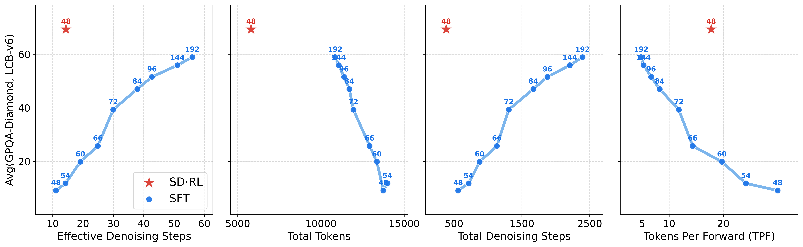
扩散相对 AR 的吞吐优势取决于两个竞争量：每个去噪步解码更多 token（需要远少于 AR 的 forward passes），但每个 forward 处理 256-token canvas 因而慢 r 倍，总体相对 AR 吞吐约为 /r。
先把每 forward 产出的 token 数最大化（SFT + SDRL 已做），再针对 GPU 级优化最小化每 forward 的消耗，例如低 batch size 场景的专门优化。若能同时压低两个量，速度优势就体现出来。
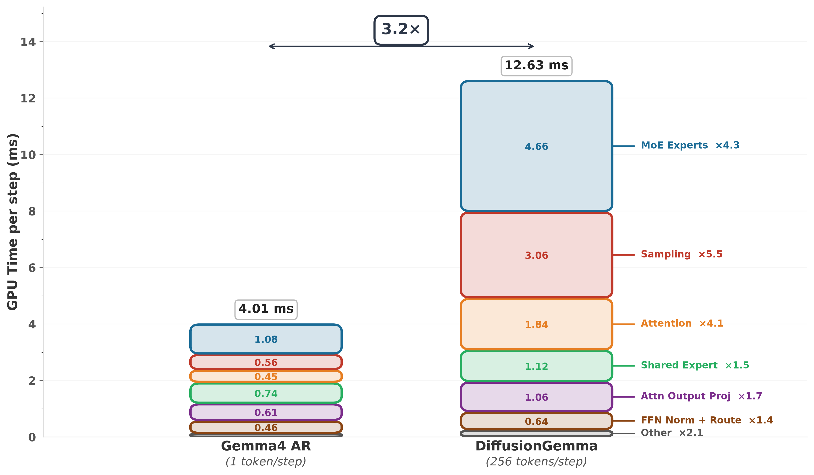
逐个 forward 的 GPU 时间分解显示：DiffusionGemma 每步处理 256 个 token，单步延迟只增长 3.2 倍——换来的是吞吐数量级的提升。
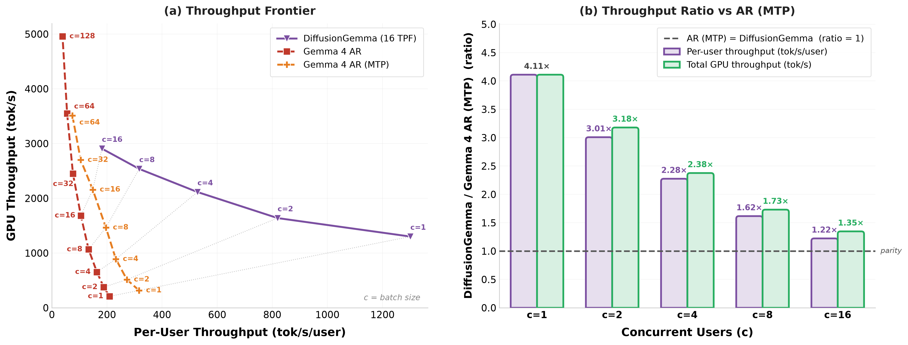
评测覆盖 4 种运行模式：文本扩散（TD）对自回归（AR）、各带/不带思考；对比对象包括 Gemma 4 26B A4B（AR 来源）、当代开源文本扩散模型 LLaDA 2.1 Flash 100B、Nemotron Diffusion 14B，以及专有 Mercury 2 API。
基准套件横跨数学推理（AIME/GSM8K/MGSM/Putna）、代码生成、通用知识、多模态理解、指令跟随与 agentic 能力。平均每个 forward 约 20 token，单 H100 约 1500 output tokens/s，同时整体能力与 AR 基线可比。
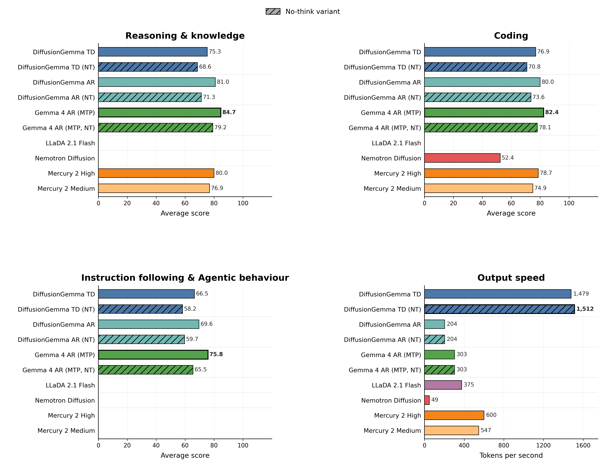
性能-速度权衡图上，DiffusionGemma 把能力 × 速度的 Pareto 前沿显著向前推——这是「快而不笨」的量化证明。
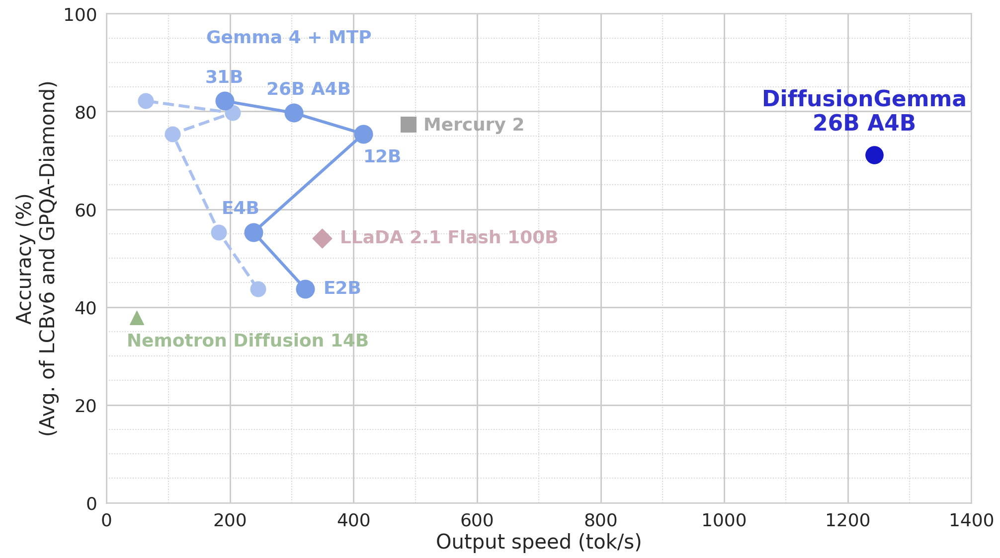
扩散范式的主打优势是低延迟，但它的架构还带来计算效率之外的好处：双向推理与自我纠正——模型能同时看到前后文，在生成中纠正之前的决策；动态自适应计算——按任务复杂度调整去噪步数，简单问题少步、难题多步；结构化与约束输出——能更好地遵守格式约束。
在一位数乘法等典型案例上，去噪轨迹让模型从「自信的错误」逐步走向正确的答案，展示了与 AR 单向扫描截然不同的修正方式。
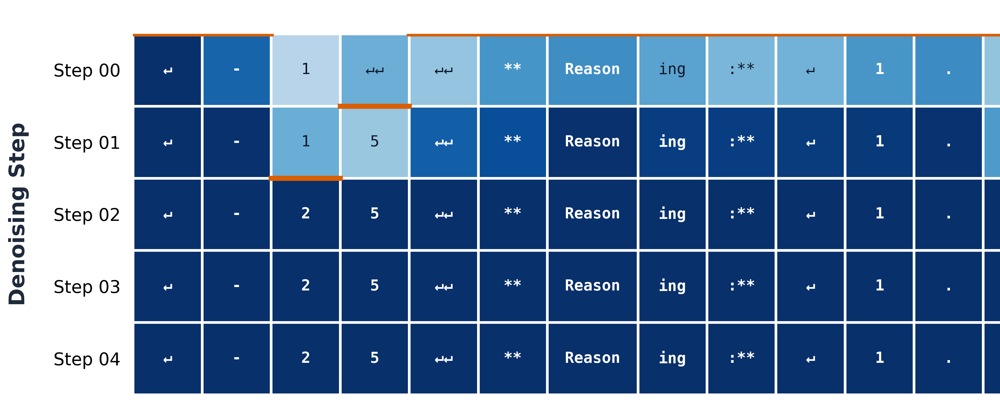
限制方面，作者也坦承扩散微调后若做纯 AR 会有轻微质量损失，且当前主要在响应延迟敏感场景最亮眼——但保留的 AR 能力指向混合 diffusion-AR 解码的更灵活未来。
DiffusionGemma 证明了一条可行路径：把现代最强 AR 背骨（Gemma 4）用不到 10% 的预算转成文本扩散模型，换来 1500 token/s 的极致生成速度，同时几乎不牺牲能力——还在速度-智能图上开辟了新 Pareto 前沿。
SDRL 的「一次更新同时提智能 + 压步数」、块对角注意力与块自回归的组合，都是值得借鉴的工程决策。对响应延迟敏感的生产场景，这是 AR 之外一个真正可选、且开源可复现的答案。
参考：https://arxiv.org/abs/2608.00146